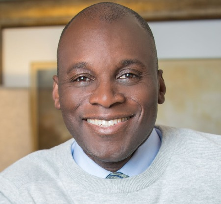

About Me

I grew up in Brooklyn, NY in a diverse and multi-cultural community made up of immigrants originating from the Caribbean, Central and South America, Eastern Europe, Asia and the Middle East. I have had an extensive experience with cultures outside of my own, and still I seek opportunities to learn more from others with different perspectives on a variety of topics. My experience as a member of an underrepresented group has helped me strengthen my tolerance for others and cultivate a personal affinity for helping those who face similar challenges based on their identity. As a military veteran I’ve also had the distinct opportunity to serve with many individuals representing many cultures. I am equitable regarding their ethnicity, gender, age, religion, language, ability/disability, sexual orientation, gender identity or socioeconomic status. In my professional life as a public health professional I strive to be just and equitable with public health practices for those who are underrepresented.
Top 10 Things To Know About Me
- I like riding bicycles
- I love watching the English Prmier League Soccer
- Soccer is my favorite sport
- My most favorite movies are:
- Good Fellows
- Scarface
- The Godfather
- Star Wars
- Platoon
- Game of Thrones
My Work Experience
- Program Manager - Lead & Toxics Program
- IT Equity and Social Justice Analyst
- Analytics Manager
- Hospital Corpsman